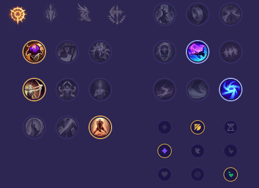

Starter: Ostrze Dorana 2x Mikstura Zdrowia Core Bulid: Ząb Nashora Buty Prędkości Zmierzch i Brzask Full Bulid: Zabójczy Kapelusz Rabadona Płomień Cienia Kostur Pustki

Słaby przeciwko: - Irelia - Vayne - Ornn - Yone - Akali - Kennen Dobry przeciwko: - Nasus - Garen - Sett - Zaahen - Darius - Gwen